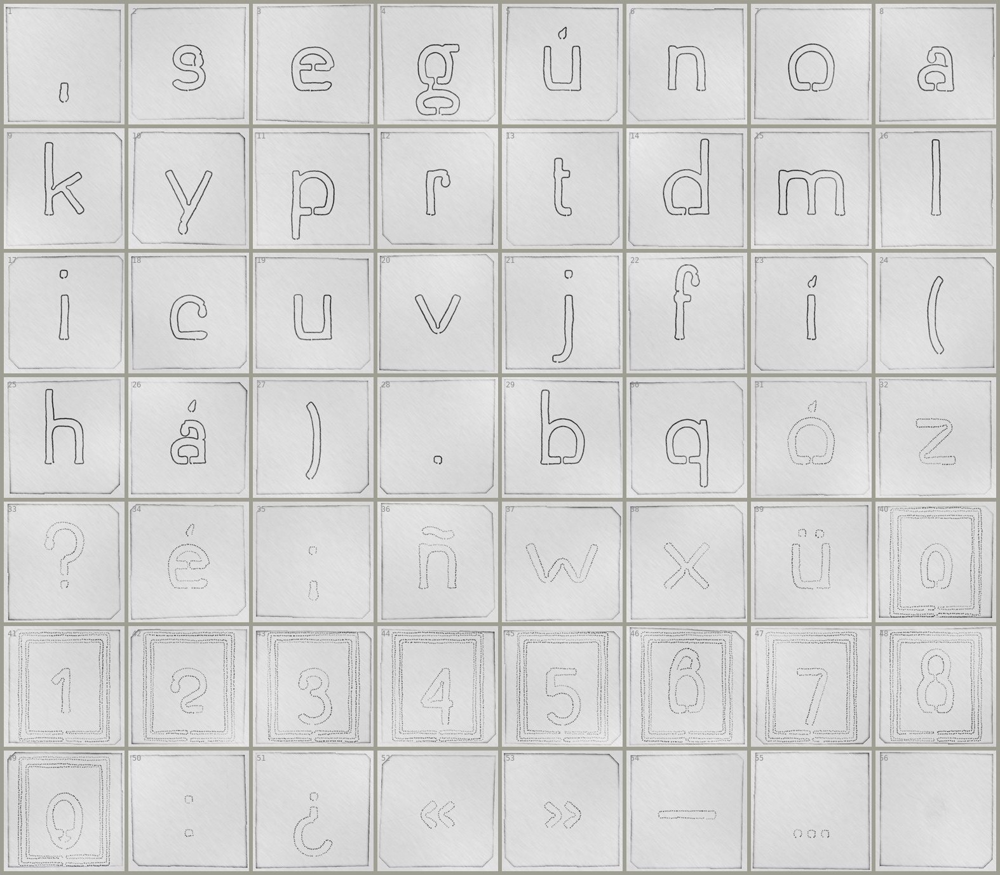
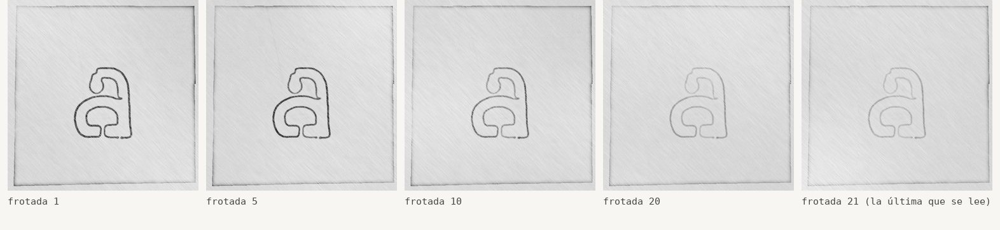

Un papel sobre la placa, frotado con grafito: el gesto con el que empezó todo.
La primera acción del taller es frotar la pared de la piscina. Aquí se frota la placa, por el anverso. El papel no entra en los valles finos: toca toda la hoja y se carga donde la placa sube.
Cada frotada aplasta un poco el relieve. Se frota hasta que la letra no se lee: el peso de una letra se mide en frotadas.
El signo final, una presión de pulgar, no da frotada: el domo es liso y el papel lo acompaña.
Todos los archivos funcionan así.del poema

